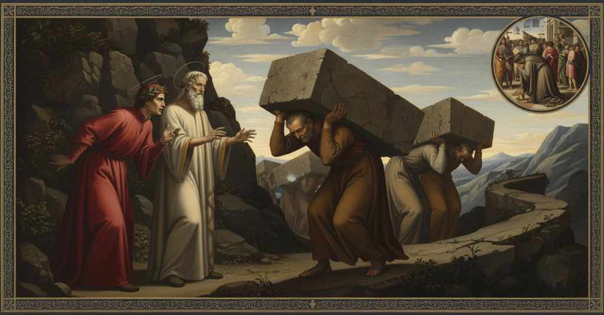

Purgatorio — Canto 11

Riassunto Summary 要約
Sulla prima cornice, Dante incontra i superbi che, schiacciati da pesi, pregano; qui Omberto Aldobrandeschi, Oderisi da Gubbio e Provenzan Salvani esemplificano la vanità della gloria terrena e il valore di un singolo atto di umiltà.
On the first terrace, Dante meets the proud who, crushed by weights, are praying; here Omberto Aldobrandeschi, Oderisi da Gubbio, and Provenzan Salvani exemplify the vanity of earthly glory and the value of a single act of humility.
第一環でダンテは重荷に潰されながら祈る傲慢者たちに会い、ここでオンベルト・アルドブランデスキ、オデリージ・ダ・グッビオ、プロヴェンツァン・サルヴァーニが、この世の栄光の虚しさと唯一の謙譲の行いの価値を例証する。
Segmento 1 1–36
Le anime dei superbi, schiacciate sotto pesi che le fanno andare curve, recitano una parafrasi del "Padre Nostro" adattata alla loro condizione. Invocano la pace del regno di Dio, riconoscendo di non poterla raggiungere con le proprie forze, e chiedono la "manna quotidiana" per non arretrare nel loro aspro cammino. Spiegano che l'ultima preghiera, quella per essere liberati dalla tentazione, non è per loro ma per i vivi rimasti sulla terra. Il narratore, vedendoli così affaticati, riflette sulla reciprocità della preghiera: come quelle anime pregano per i vivi, così i vivi dovrebbero aiutarle con le loro preghiere a purificarsi e a salire, mondi e leggeri, verso il cielo.
The souls of the proud, crushed under weights that make them walk bent over, recite a paraphrase of the 'Our Father' adapted to their condition. They invoke the peace of God's kingdom, acknowledging they cannot reach it by their own strength, and ask for 'daily manna' so as not to go backward on their harsh path. They explain that the final prayer, to be delivered from temptation, is not for them but for the living left on Earth. The narrator, seeing them so weary, reflects on the reciprocity of prayer: just as those souls pray for the living, so the living should help them with their prayers to be purified and to ascend, clean and light, toward heaven.
傲慢者たちの魂は、体を屈めさせるほどの重荷に押しつぶされながら、自分たちの状態に合わせた「主の祈り」の言い換えを唱える。彼らは、自らの力では到達できないことを認め、神の国の平和を懇願し、険しい道で後退しないように「日々の糧（マナ）」を求める。誘惑から救われるようにという最後の祈りは、自分たちのためではなく、地上に残してきた生者のためのものであると説明する。そのように疲労困憊した彼らの姿を見た語り手は、祈りの相互性について思いを巡らす。すなわち、煉獄の魂が生者のために祈るように、生者もまた、彼らが浄められ、清く軽くなって天国へ昇れるよう、祈りをもって助けるべきなのである。
Segmento 2 37–72
Virgilio chiede alle anime dei superbi quale sia il sentiero più agevole per salire, spiegando che Dante, essendo ancora vivo e nel suo corpo, fatica a procedere. Una voce, senza che si veda chi parli, risponde indicando di andare a destra. L'anima si presenta poi come Omberto Aldobrandeschi, spiegando che la sua pena, un masso che gli piega il collo, gli impedisce di alzare lo sguardo per riconoscere Dante. Confessa che la sua superbia, nata dal suo nobile lignaggio toscano, lo portò a disprezzare tutti, causandone la morte e la rovina di tutta la sua famiglia. Ora, tra i morti, deve portare questo peso per la sua arroganza finché non avrà soddisfatto la giustizia di Dio, cosa che non fece da vivo.
Virgil asks the souls of the proud for the easiest path to ascend, explaining that Dante, being still alive and in his body, struggles to proceed. A voice, without the speaker being seen, responds by indicating they should go to the right. The soul then introduces himself as Omberto Aldobrandeschi, explaining that his penance, a boulder that bends his neck, prevents him from looking up to recognize Dante. He confesses that his pride, born of his noble Tuscan lineage, led him to despise everyone, causing his death and the ruin of his entire family. Now, among the dead, he must carry this weight for his arrogance until he has satisfied God's justice, something he did not do while alive.
ウェルギリウスは傲慢者たちの魂に、最も登りやすい道を尋ね、ダンテはまだ生身の体を持っているため、進むのに苦労していると説明する。話し手は見えないが、声が右へ行くよう指示して答える。その魂は、自分はオンベルト・アルドブランデスキであると名乗り、罰として首を曲げさせている岩のせいで、顔を上げてダンテを認識することができないと説明する。彼は、トスカーナの貴族の家系に生まれたことによる自身の傲慢さが、万人を軽蔑させ、自らの死と一族全体の破滅を招いたと告白する。今、死者たちの中で、彼は生前にしなかった神の正義を満たすまで、その傲慢さのためにこの重荷を運び続けなければならない。
Segmento 3 73–117
Mentre cammina chino, Dante viene riconosciuto da un'altra anima, l'illustratore di manoscritti Oderisi da Gubbio. Oderisi, ora umile, ammette che il suo rivale Franco Bolognese lo ha superato e confessa che la sua superbia in vita gli ha meritato questa pena. Lancia poi un discorso sulla vanità della gloria terrena, spiegando come essa sia effimera. Porta come esempi il pittore Giotto che ha oscurato la fama di Cimabue e un Guido poeta che ha superato l'altro. Conclude paragonando la fama al colore dell'erba, che va e viene, e indica un'anima vicina, il potente capo senese Provenzan Salvani, la cui grande fama è ormai quasi dimenticata.
While walking bent over, Dante is recognized by another soul, the manuscript illuminator Oderisi of Gubbio. Oderisi, now humble, admits that his rival Franco Bolognese has surpassed him and confesses that his pride in life earned him this punishment. He then launches into a discourse on the vanity of earthly glory, explaining how ephemeral it is. He gives as examples the painter Giotto who obscured the fame of Cimabue, and one poet Guido who surpassed the other. He concludes by comparing fame to the color of grass, which comes and goes, and points to a nearby soul, the powerful Sienese leader Provenzan Salvani, whose great fame is now almost forgotten.
身を屈めて歩いていると、ダンテは別の魂、グッビオ出身の写本装飾家オデリージに見いだされる。今や謙虚になったオデリージは、ライバルであったフランコ・ボロニェーゼが自分を凌駕したことを認め、生前の傲慢さがこの罰をもたらしたのだと告白する。そして、この世の名声の虚しさについて語り始め、それがいかに儚いものであるかを説く。彼は例として、チマブーエの名声を曇らせた画家ジョットや、もう一方を凌駕した詩人グイドを挙げる。彼は名声を、現れては消える草の色にたとえて締めくくり、かつては偉大であった名声が今やほとんど忘れ去られている、シエナの有力な指導者プロヴェンツァン・サルヴァーニという近くの魂を指し示す。
Segmento 4 118–142
Dante chiede a Oderisi chi sia l'anima menzionata, che si rivela essere Provenzan Salvani. Dante si chiede come Salvani, pentitosi solo in punto di morte, abbia potuto evitare l'attesa nell'Antipurgatorio. Oderisi spiega che ciò fu possibile grazie a un singolo atto di profonda umiltà: quando era al culmine della sua gloria, Salvani si umiliò pubblicamente mendicando nel Campo di Siena per raccogliere il denaro necessario a riscattare un amico prigioniero. Oderisi conclude con una profezia oscura, dicendo che Dante stesso capirà presto il significato di una tale umiliazione a causa delle azioni dei suoi concittadini, alludendo al suo futuro esilio.
Dante asks Oderisi who the mentioned soul is, who is revealed to be Provenzan Salvani. Dante wonders how Salvani, having repented only at the point of death, was able to avoid the wait in Ante-Purgatory. Oderisi explains that this was possible thanks to a single act of profound humility: when he was at the height of his glory, Salvani humbled himself by publicly begging in the Campo di Siena to raise the money needed to ransom an imprisoned friend. Oderisi concludes with a dark prophecy, saying that Dante himself will soon understand the meaning of such humiliation because of the actions of his fellow citizens, alluding to his future exile.
ダンテはオデリージに、言及された魂が誰であるかを尋ね、それがプロヴェンツァン・サルヴァーニであることが明かされる。ダンテは、死の間際に悔い改めたばかりのサルヴァーニが、なぜ煉獄辺獄での待機を免れることができたのかと疑問に思う。オデリージは、それは唯一の深遠な謙譲の行いのおかげだと説明する。栄光の絶頂にあった時、サルヴァーニは囚われの友人を解放するための身代金を集めるため、シエナのカンポ広場で公に物乞いをして自らを卑しめたのである。オデリージは、ダンテ自身も同胞市民の行いによって、やがてそのような屈辱の意味を理解することになるだろうと、自らの将来の追放を暗示する不吉な予言で締めくくる。